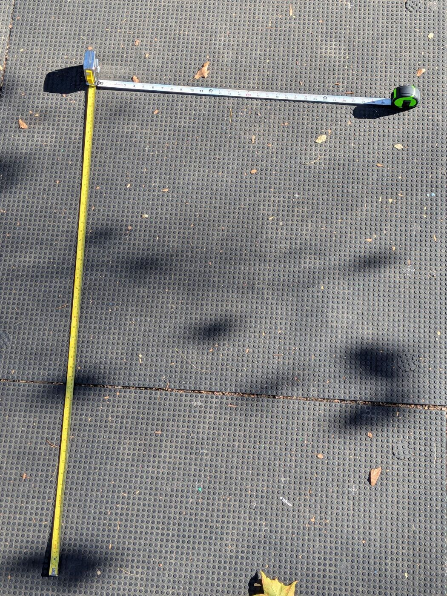
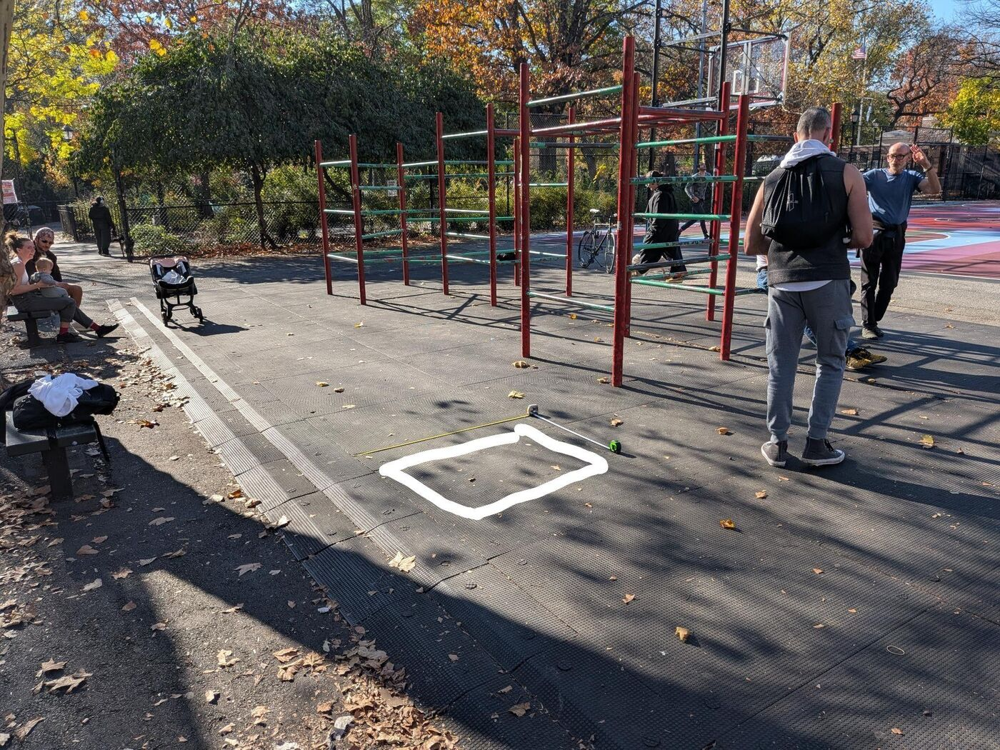
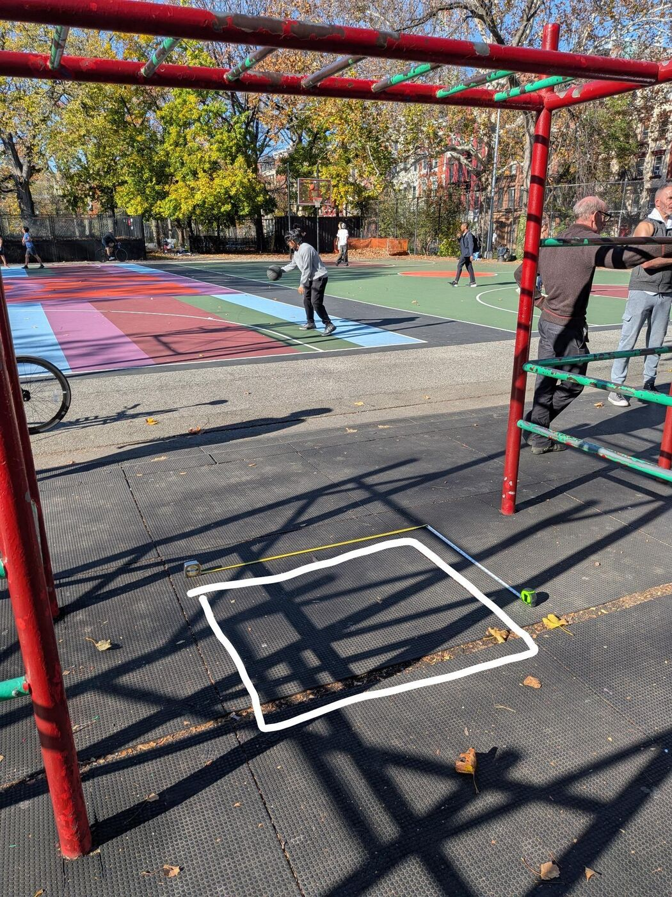
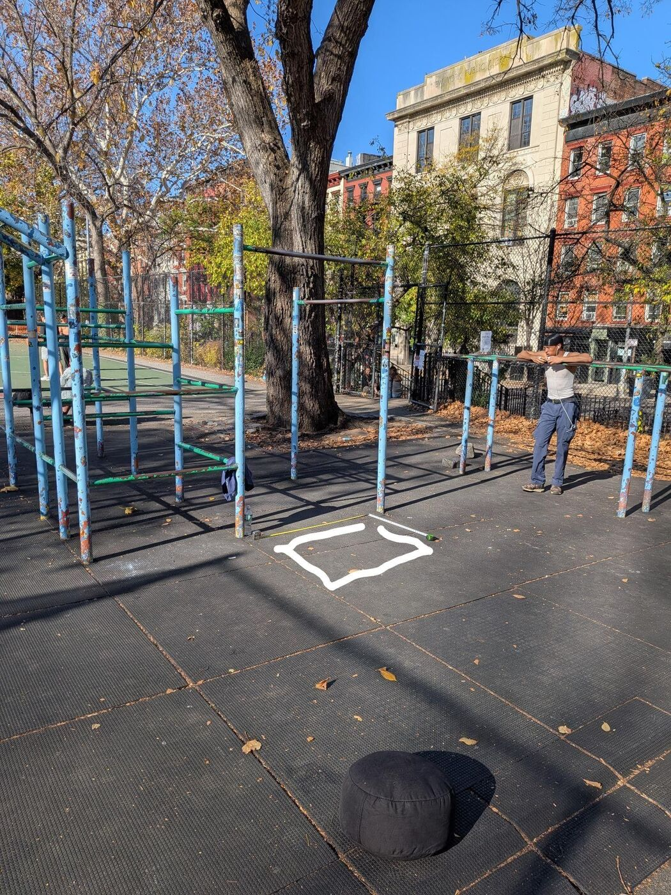
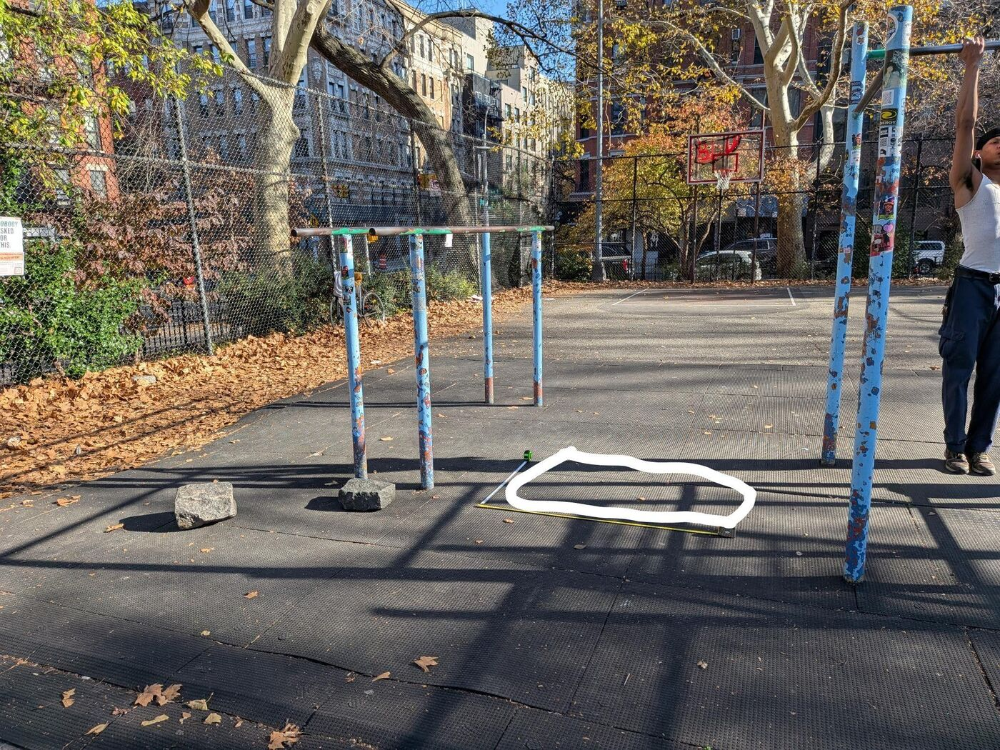
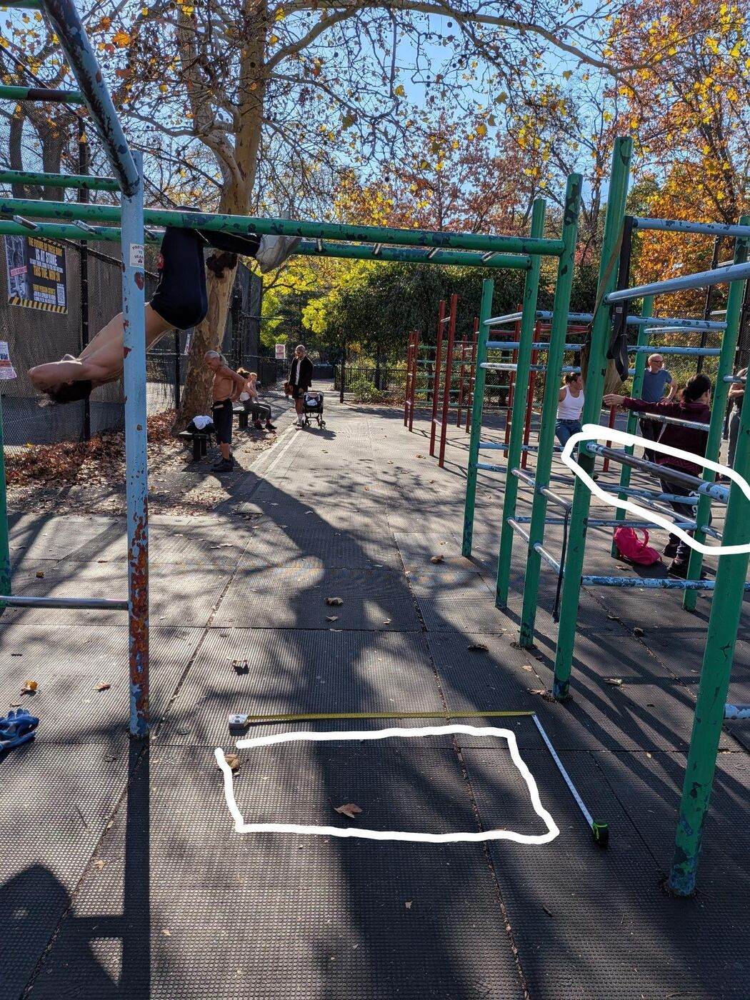

Maneuverability of Tompkins Square Park Calisthenics Area
Under the ADA standards, at least one of each type of exercise machine must have an accessible route and clear floor space measuring at least 30 by 48 inches.
The following pictures, taken on Friday, Nov 20, 2026, show how all the bars can easily accommodate the legally prescribed space to park mobility devices.

Measuring tapes set to 48” and 30” inches. These are shown in all the following pictures with rectangles drawn inside them.

Ample space around a 30x48 square shown on the path around the red bars and a baby stroller behind.


Ample space around the bars to maneuver.

Those rocks next to the parallel bars get more use than most modern gym equipment! As usual they are being kept clear of pathways between the bars.

Note the mobility equipment measurement is shown horizontally here for using the low bar. If shown vertically to only traverse the pathway, there is actually double the space!